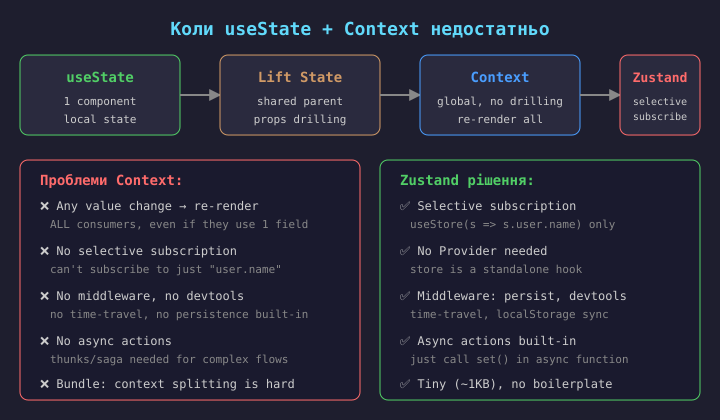
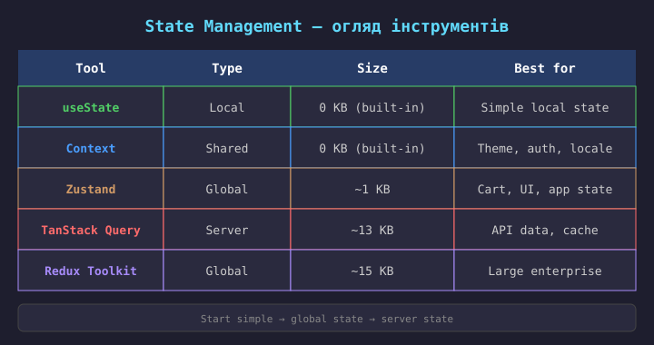
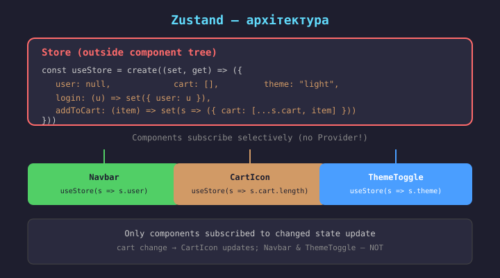
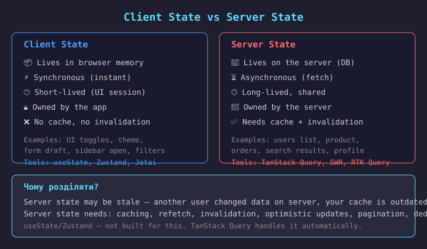
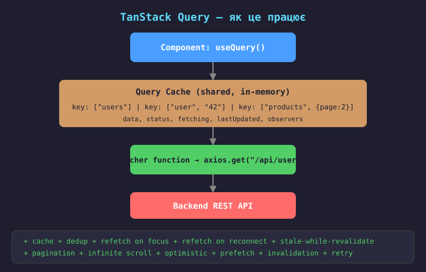
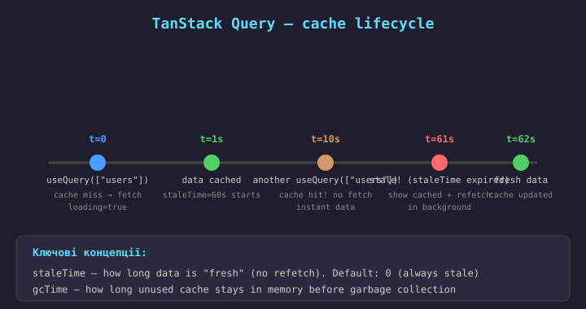
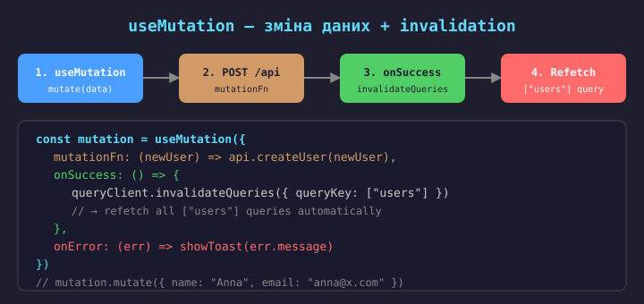
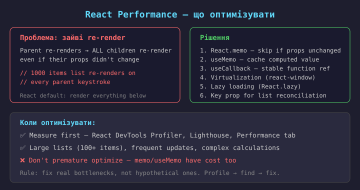
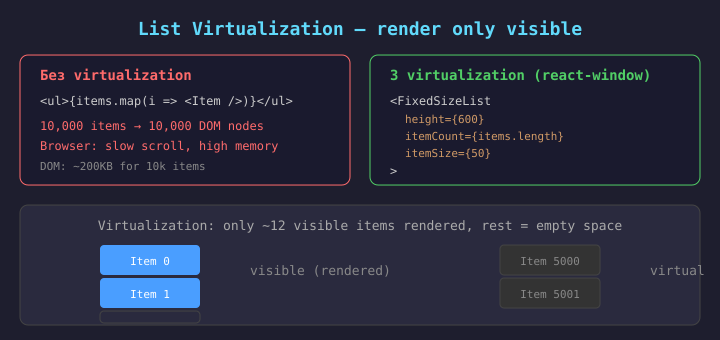

Context API — чудовий інструмент, але має обмеження:
user.name, ігноруючи user.role;Коли потрібен state manager:


// store/useStore.ts
import { create } from "zustand";
type Store = {
user: User | null;
cart: CartItem[];
theme: string;
// actions
login: (user: User) => void;
logout: () => void;
addToCart: (item: CartItem) => void;
setTheme: (theme: string) => void;
};
export const useStore = create<Store>((set, get) => ({
user: null,
cart: [],
theme: "light",
login: (user) => set({ user }),
logout: () => set({ user: null }),
addToCart: (item) => set((state) => ({
cart: [...state.cart, item]
})),
setTheme: (theme) => set({ theme }),
}));
Zustand — мінімалістичний state manager (~1KB).
Особливості:
useStore;Встановлення:
npm install zustand
// ✅ Selective subscription
function Navbar() {
// only re-renders when user changes
const user = useStore(s => s.user);
return <nav>Hello, {user?.name}</nav>;
}
function CartIcon() {
// only re-renders when cart.length changes
const count = useStore(s => s.cart.length);
return <span>Cart ({count})</span>;
}
// ✅ Multiple fields
const { user, theme } = useStore(s => ({
user: s.user, theme: s.theme
}));
// ✅ Actions (stable references)
const addToCart = useStore(s => s.addToCart);
// ✅ Get without subscribe
const items = useStore.getState().cart;
Селектор — функція
(state) => value.
Перевага над Context:
shallow comparator);useCallback);getState() — читання без
підписки (в event handlers).Shallow compare для об'єктів:
import { shallow } from "zustand/shallow"
useStore(selector, shallow)
// persist — localStorage sync
import { persist } from "zustand/middleware"
const useStore = create(persist(
(set) => ({ theme: "light", ... }),
{ name: "app-storage" }
))
// devtools — Redux DevTools
import { devtools } from "zustand/middleware"
const useStore = create(devtools(
(set) => ({ ... }),
{ name: "my-store" }
))
Комбінація middleware (persist + devtools):
const useStore = create(devtools(persist(
(set, get) => ({
user: null, cart: [], login: (u) => set({ user: u }),
}),
{ name: "app-store" }
)))
export const useStore = create<Store>((set, get) => ({
user: null,
loading: false,
error: null,
// Async action built-in!
login: async (email: string, password: string) => {
set({ loading: true, error: null });
try {
const { user, token } = await authApi.login(email, password);
localStorage.setItem("token", token);
set({ user, loading: false });
} catch (e) {
set({ error: e.message, loading: false });
}
},
// Read current state with get()
checkout: async () => {
const cart = get().cart;
await ordersApi.create({ items: cart });
set({ cart: [] });
},
}));
Async в Zustand — просто
async функція в store.
Без thunk/saga — як у Redux.
get() — читання стану без підписки (всередині actions).
Виклик з компонента:
const login = useStore(s => s.login);
const loading = useStore(s => s.loading);
const handleSubmit = async () => {
await login(email, password);
navigate("/dashboard");
};
Компонент не містить логіки — лише викликає action.
// store/userSlice.ts
export const createUserSlice = (set, get) => ({
user: null,
login: async (email, pwd) => { ... },
logout: () => set({ user: null }),
});
// store/cartSlice.ts
export const createCartSlice = (set, get) => ({
cart: [],
addToCart: (item) => set(s => ({
cart: [...s.cart, item]
})),
removeFromCart: (id) => set(s => ({
cart: s.cart.filter(i => i.id !== id)
})),
});
// store/index.ts — combine slices
export const useStore = create({
...createUserSlice,
...createCartSlice,
});
Slices патерн — розділення store на логічні частини.
Переваги:
get().Аналог — Redux Toolkit slices, але без boilerplate.

Server state має унікальні властивості, яких немає у client state:
useState + useEffect не рішення для server state. TanStack Query автоматизує все це.


// Ручний (useState + useEffect)
const [users, setUsers] = useState()
const [loading, setLoading] = useState()
const [error, setError] = useState()
useEffect(() => {
fetch(...).then(setUsers)
}, [])
~50 lines of boilerplate per query
// TanStack Query
const { data, isLoading, error }
= useQuery({
queryKey: ["users"],
queryFn: () => api.getUsers()
})
~3 lines of code per query
useMutation + invalidateQueries
import { useQuery } from "@tanstack/react-query";
function UserList() {
const {
data, // User[] | undefined
isLoading, // boolean (first load)
isFetching, // boolean (any fetch)
isError, // boolean
error, // Error | null
refetch, // () => Promise
} = useQuery({
queryKey: ["users"],
queryFn: () => usersApi.list(),
staleTime: 60 * 1000, // 60s fresh
refetchOnWindowFocus: true,
});
if (isLoading) return <Spinner />;
if (isError) return <ErrorView error={error} onRetry={refetch} />;
return (
<ul>
{data.map(u => <li key={u.id}>{u.name}</li>)}
</ul>
);
}
useQuery — хук для читання server state.
queryKey — унікальний ключ для кешу
(як ["users"],
["user", "42"],
["products", {page: 2}]).
queryFn — функція, що повертає Promise (fetcher).
Автоматично:
isLoading — перший load (даних ще немає). isFetching — будь-який fetch (включає background refetch).

import {
useMutation, useQueryClient
} from "@tanstack/react-query";
function DeleteUser({ id }) {
const queryClient = useQueryClient();
const mutation = useMutation({
mutationFn: () => usersApi.delete(id),
// Optimistic update
onMutate: async () => {
await queryClient.cancelQueries({ queryKey: ["users"] });
const prev = queryClient.getQueryData(["users"]);
queryClient.setQueryData(["users"], old =>
old?.filter(u => u.id !== id));
return { prev };
},
onError: (_err, _vars, ctx) => {
queryClient.setQueryData(["users"], ctx.prev);
},
onSettled: () => {
queryClient.invalidateQueries({ queryKey: ["users"] });
},
});
return <button onClick={() => mutation.mutate()}
disabled={mutation.isPending}>
{mutation.isPending ? "Deleting..." : "Delete"}
</button>;
}
useMutation — для CUD-операцій (Create, Update, Delete).
Ключові callback-и:
invalidateQueries — позначає кеш як stale → автоматичний refetch.
Optimistic update — оновлюємо кеш до відповіді сервера, відкочуємо при error.
function ProductList() {
const [page, setPage] = useState(1);
const { data, isPending, isPlaceholderData } =
useQuery({
queryKey: ["products", { page }],
queryFn: () => productsApi.list(page),
keepPreviousData: true,
placeholderData: keepPreviousData,
});
return (
<>
<ul>
{data?.items.map(p => (
<li key={p.id}>
{p.name}
</li>
))}
</ul>
<button
onClick={() => setPage(p => p - 1)}
disabled={page === 1}
>Prev</button>
<button
onClick={() => setPage(p => p + 1)}
disabled={isPlaceholderData}
>Next</button>
</>
);
}
Pagination — page в queryKey.
keepPreviousData — при зміні сторінки показуємо старі дані, поки нові вантажаться (немає «мерцання» списку).
isPlaceholderData — true, коли показуються старі дані (для disabled кнопок).
Infinite scroll —
useInfiniteQuery:
hasNextPage,
fetchNextPage;// main.tsx — setup QueryClient
import {
QueryClient, QueryClientProvider
} from "@tanstack/react-query";
import { ReactQueryDevtools } from
"@tanstack/react-query-devtools";
const queryClient = new QueryClient({
defaultOptions: {
queries: {
staleTime: 60 * 1000, // 1 min
retry: 3,
refetchOnWindowFocus: true,
},
},
});
ReactDOM.createRoot(document.getElementById("root")!)
.render(
<QueryClientProvider client={queryClient}>
<App />
<ReactQueryDevtools /> // dev only
</QueryClientProvider>
);
QueryClient — глобальний кеш-менеджер.
Default options:
DevTools — візуальний інспектор всіх queries (кеш, статус, timeline).
Встановлення:
npm install @tanstack/react-query
@tanstack/react-query-devtools
Найкраща практика — використовувати обидва інструменти разом, кожен для свого типу стану:
Не змішувати: не зберігай server дані в Zustand. Zustand лише для client-only state.
Auth state — може бути в Zustand (user, isAuthenticated), але token в localStorage/cookie.

// React.memo
// Skip re-render if props
// are shallow-equal
const Item = memo(
({ id, name }) => (
<li>{name}</li>
)
)
// for components
// useMemo
// Cache computed value
// recalc only if deps change
const sorted = useMemo(
() => items
.sort(...),
[items]
)
// for expensive calc
// useCallback
// Stable function reference
// (for memo children)
const handleClick =
useCallback((id) => {
deleteItem(id)
}, [deleteItem])
// for callbacks passed
Як вони працюють разом:
memo(Item) sees new prop → re-renders anywayuseCallback(fn, deps) → same ref → memo(Item) skips → no re-render// Без memo — re-renders on every parent render
function ListItem({ item, onDelete }) {
return <li>
{item.name}
<button onClick={() => onDelete(item.id)}>X</button>
</li>;
}
// З memo — skip if props unchanged
import { memo } from "react";
const ListItem = memo(function ListItem({
item, onDelete
}: { item: Item; onDelete: (id: string) => void }) {
return <li>
{item.name}
<button onClick={() => onDelete(item.id)}>X</button>
</li>;
});
// Custom comparison (if needed)
const ListItem = memo(Component, (prev, next) => {
return prev.item.id === next.item.id
&& prev.item.name === next.item.name;
});
React.memo — HOC, що пропускає re-render, якщо props shallow-equal.
Коли використовувати:
Коли НЕ використовувати:
Custom compare — для глибокого порівняння (повільніше, але точніше).
// useMemo — cache expensive calc
function ProductGrid({ products, query }) {
const filtered = useMemo(
() => products
.filter(p => p.name.includes(query))
.sort((a, b) => a.name.localeCompare(b.name)),
[products, query]
);
return <ul>{filtered.map(...)}</ul>;
}
// useCallback — stable function for memo child
function UserList({ users }) {
const handleDelete = useCallback(
(id: string) => usersApi.delete(id),
[]
);
return users.map(u => (
<ListItem
key={u.id}
item={u}
onDelete={handleDelete}
/>
));
}
useMemo — кешує значення.
useCallback — кешує функцію
(еквівалент
useMemo(() => fn, deps)).
Коли useMemo:
Коли useCallback:
React 19: React Compiler автоматично оптимізує багато з цих випадків.

import { FixedSizeList as List }
from "react-window";
function BigList({ items }: {
items: Item[]
}) {
const Row = ({ index, style }) => (
<div style={style}>
{items[index].name}
</div>
);
return (
<List
height={600}
width={"100%"}
itemCount={items.length}
itemSize={50}
>
{Row}
</List>
);
}
// 10,000 items → only ~12 rows in DOM
// scroll is butter-smooth
react-window — бібліотека для virtualization списків.
Принцип: рендерить лише видимі елементи + невеликий буфер. Решта — порожній простір з scroll.
Переваги:
Альтернативи:
@tanstack/react-virtual,
react-virtuoso.
Коли: списки > 100 елементів, таблиці, feed.
// 1. Route splitting
const Home = lazy(
() => import("./Home")
)
// Each route = separate chunk
// loaded on navigation
// 2. Component splitting
const Modal = lazy(
() => import("./Modal")
)
// Heavy components loaded
// on demand (modal, chart)
// 3. Vendor splitting
// vite.config.ts
manualChunks: {
react: ["react",
"react-dom"]
}
// Libs cached separately
Bundle analysis tools:
vite-bundle-visualizer / webpack-bundle-analyzer — see what's inside your bundle// useTransition — mark update as non-urgent
import { useTransition } from "react";
function Search() {
const [query, setQuery] = useState("");
const [isPending, startTransition] =
useTransition();
const onChange = (e) => {
setQuery(e.target.value); // urgent (input)
startTransition(() => {
setResults(filter(e.target.value)); // non-urgent
});
};
return <>
<input value={query} onChange={onChange} />
{isPending && <Spinner />}
<List items={results} />
</>;
}
// useDeferredValue — defer a value
const deferredQuery = useDeferredValue(query);
// results use deferredQuery, input uses query
Concurrent React (React 18+) — пріоритезация оновлень.
useTransition — позначає оновлення як non-urgent (може перерватись).
use case: input швидко оновлюється, важкий список — в фоні.
useDeferredValue — «відкладене» значення для дорогих обчислень.
Переваги:
React DevTools Profiler — запис рендерів, показує що, чому і скільки рендерилось.
Що шукати:
Правило: Measure first, optimize second. Не оптимізуй те, що не є проблемою.
| Категорія | Що перевірити |
|---|---|
| Bundle | Lazy routes, vendor split, tree-shaking, bundle analyzer |
| State | Zustand for client, TanStack Query for server, no duplication |
| Performance | React.memo for lists, virtualization, useMemo/useCallback (profiled) |
| API | TanStack Query cache, invalidation, optimistic, error boundaries |
| Routing | Lazy routes, protected routes, 404, error boundaries per route |
| Forms | React Hook Form + Zod, validation UX, accessibility |
| Security | XSS protection, auth flow, token refresh, HTTPS, CSP |
| Monitoring | Error tracking (Sentry), analytics, performance monitoring |
| Testing | Vitest + Testing Library, E2E (Playwright), component tests |
В testing React використовують:
render(), screen, fireEvent, userEvent);Принцип Testing Library: test як користувач взаємодіє з UI, а не як компонент реалізований.
Що тестувати: behavior, не implementation.
React 19: act() більше не потрібен
для більшості випадків.